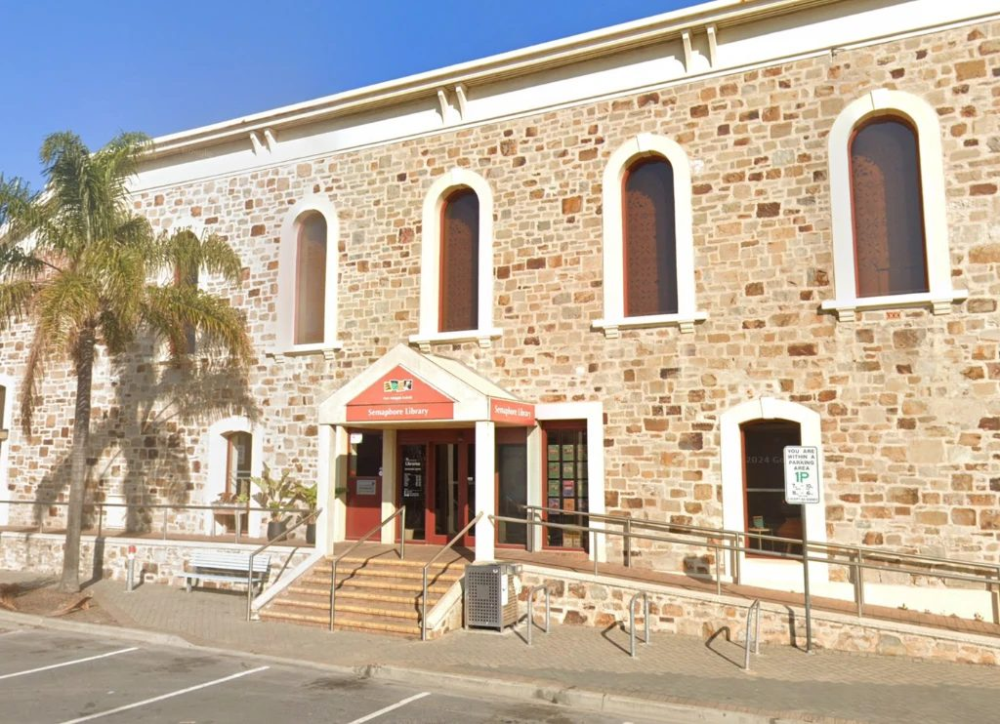

Public libraries
People counting for public libraries
Measure visits at the door and live occupancy in every zone, so you can prove the value of the library, plan hours and services, and help patrons find space.

The challenge
Loved, but hard to prove.
Public libraries compete for funding against services with harder numbers, yet their core value, community access, learning and dwell, is easy to feel and hard to prove. Door totals understate real use: they show traffic in and out, but not where people settle or which spaces earn their floor area.
As budgets tighten and branches face hours cuts, defensible, zone-level occupancy evidence is what converts “the library is loved” into a fundable business case.
What you can measure
The data you get from day one.
Door visits
People in and out, by hour, day and week.
Zone occupancy
Live occupancy in reading rooms, children’s areas, study and computers.
Dwell time
How long patrons stay, by area.
Seat utilisation
Study and desk space occupied versus available.
Room use
Meeting and community rooms, booked versus actually used.
Program attendance
Numbers at events, story time and activities, tied to a space and time.
Peak vs average
Busiest times and congestion, for capacity and rosters.
Branch comparison
Visits per operating hour and per square metre across branches.
Ways to use it
How library and council teams use the data.
Set hours to real demand
Justify extending, holding or trimming hours per branch using measured demand by hour and day. Evening and weekend peaks are often invisible to budget-setters.
Defend branches with evidence
Build funding and grant cases with visitation trends and per-branch performance, and defend branches at risk of consolidation with data, not sentiment.
Reallocate fairly
Compare branches on visits per operating hour and per square metre so a small branch is not unfairly judged against a central library.
Repurpose dead space
Identify under-used zones and turn them into study seats, meeting rooms or program space.
Prove which programs work
Tie program attendance to room occupancy to show which programs draw people and should be funded and scaled.
Replace unreliable counts
Swap labour-intensive manual tallies and in-out-only door counters for verifiable, auditable figures for funding submissions.
Business impact
Make more money, save money and improve experiences.
Make more money
- Strengthen funding and grant submissions with the visitation and usage data the economic models rely on.
- Defend at-risk branches with per-branch performance evidence.
- Support charging or booking for community and meeting rooms on proven demand.
- Prioritise investment toward the branches and spaces people actually use.
Save money
- Shift or trim hours in genuinely low-use windows while protecting peaks.
- Repurpose under-used zones instead of leasing or building more space.
- Roster and clean to real use, not fixed schedules.
- Size refurbishments and furniture to observed peak occupancy, not assumed headcounts.
Improve experiences
- Help patrons find a free study seat, especially at peak times.
- Manage congestion in children’s and study areas.
- Size children’s, study and program spaces to real demand.
- Inform quiet-versus-collaborative zoning from where people actually dwell.
Related
Where this fits.
This is part of how we help councils and civic and libraries. See how counting stays anonymous.
FAQ
Questions & answers
Is counting in a public library anonymous?
Yes. People are counted as anonymous shapes and movement, processed on the device. No images or personal information are captured, which matters for a public space and for procurement.
How is this better than our door counter or manual tallies?
Door counters give in-and-out totals only, and manual counts are labour-intensive and understate use. Zone occupancy adds dwell, peak versus average and room-level data, and is verifiable for funding submissions.
Can we compare branches fairly?
Yes. Figures are normalised to visits per operating hour and per square metre, so a small branch is not judged unfairly against a central library.
Can we tie program attendance to funding?
Yes. Occupancy in a room at an event time gives attendance evidence per program, so you can prove and scale what works.
Can you measure occupancy in specific zones?
Yes. Separate counts for reading rooms, children’s areas and study spaces give live occupancy per zone, not just a door total.
See your places in a new light.
Book a 30-minute walkthrough and we'll scope a pilot for one of your sites: sensors, installation, software and insights in one agreement.